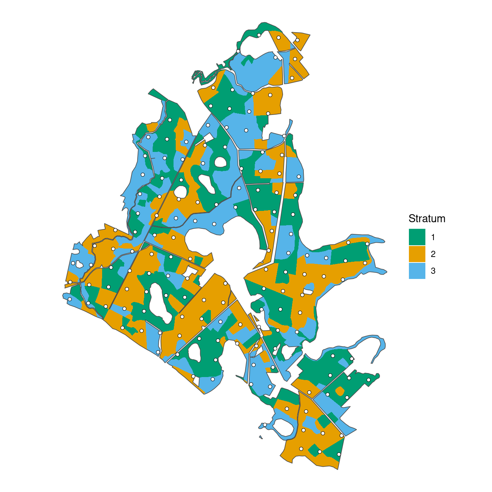
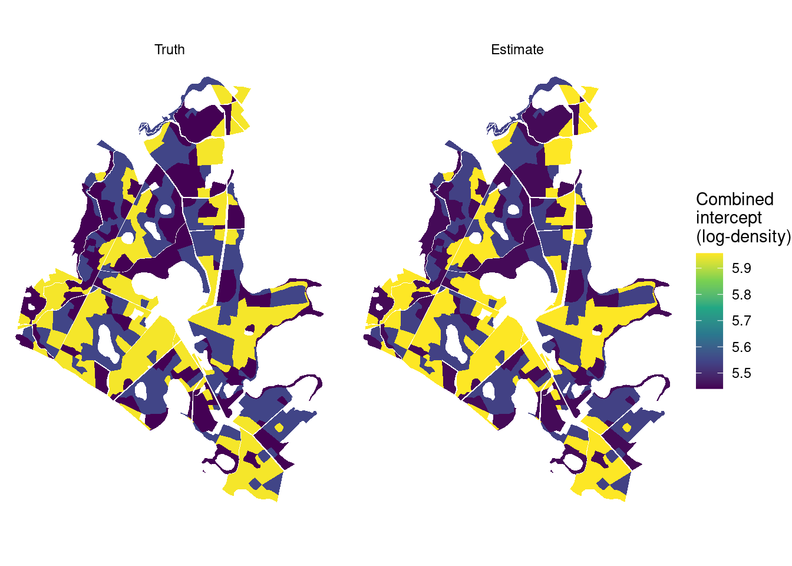
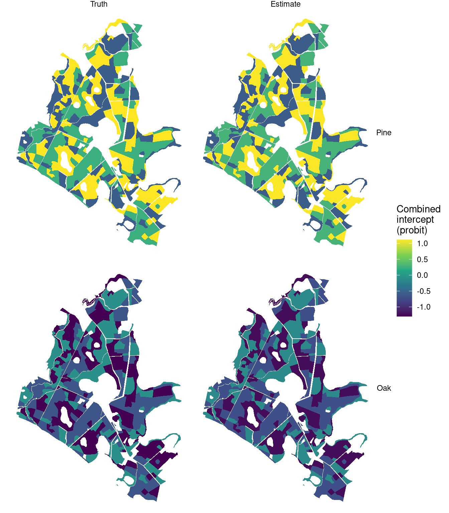
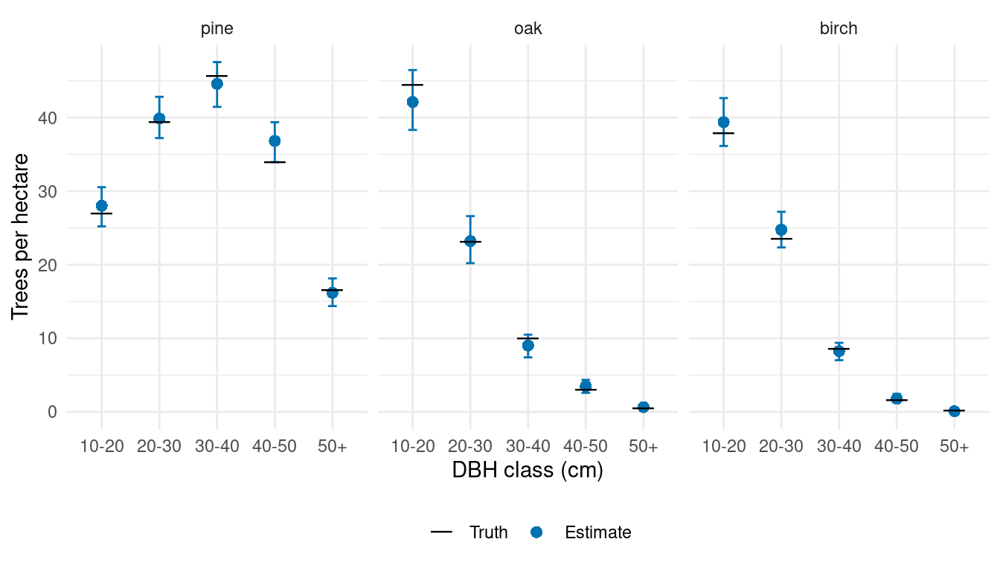
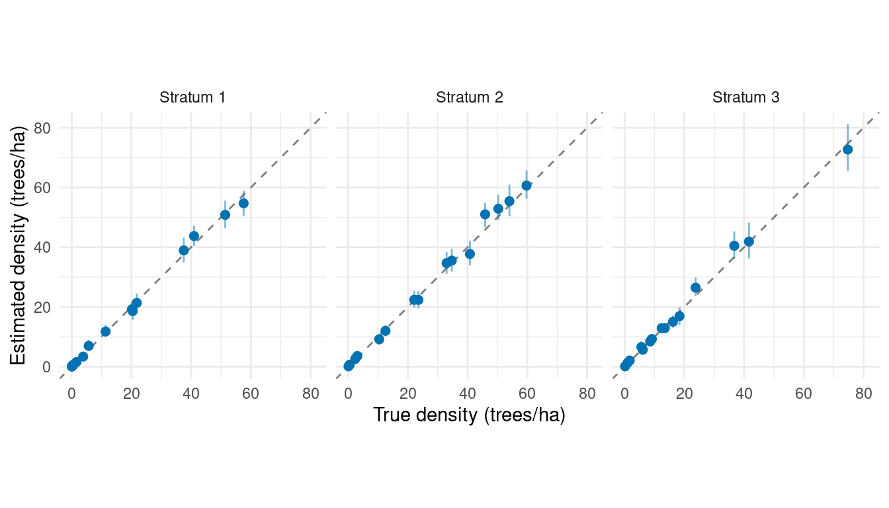
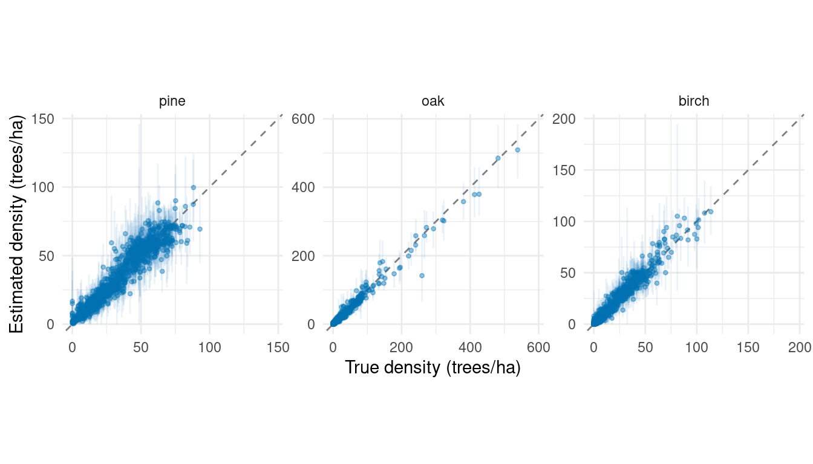

Stratum effects on tree density and species composition
Source:vignettes/articles/stratum-effects-plot-sampling.qmd
Stands with similar soils, management histories, or forest types may differ in tree density and species composition even after accounting for canopy height. We represent such groups as strata and extend the full plot-sampling model with a magnitude random intercept and a species factor effect for each stratum.
We use three groups of stands to generate a new population. We then fit the model, check the chains, and compare combined intercepts by stratum with their generating values in a table and maps. Finally, we predict across the forest and compare forest, stratum, and stand species-by-DBH densities with truth. The canopy-height slopes and the DBH allocation models remain the same across strata.
Example data
Download the stratum-example data (ZIP)
This archive contains the prepared locations and polygons for this example. Extract it and use the folder containing data/ as your R working directory. We generate the stratum effects and tree counts below.
Read the prepared data
We created three strata of 83 stands each for this example, using the stand boundaries and canopy heights from the shared inventory data. We read the prepared locations, which already have stratum_id, sampled areas, and canopy-height predictors, along with the forest, stands, and plot locations for mapping.
The dataset column identifies observed plot units and prediction units. Units crossing stratum boundaries have been divided into portions, each with its own plot_id, area, and stratum. We simulate counts separately for each portion. Applying this construction to field data would require counts recorded by portion. The predictor x uses the same standardization as in the data article.
We map the strata and the 151 sampled plot locations.
ggplot() +
geom_sf(data = stands, aes(fill = factor(stratum_id)), color = NA) +
geom_sf(data = forest, fill = NA, color = "grey30", linewidth = 0.3) +
geom_sf(data = plot_centers, shape = 21, fill = "white", size = 1.5,
stroke = 0.3) +
scale_fill_manual(values = c("#009E73", "#E69F00", "#56B4E9"),
name = "Stratum") +
coord_sf(datum = NA) +
theme_void()
Generate a population with stratum effects
Magnitude and species models
For observed unit , let be its area in hectares, its standardized canopy height, and its stratum. The magnitude model is
Here is expected tree density in trees/ha, is total count, and is negative-binomial size. The combined intercept gives log expected density in stratum at average plot canopy height. The stratum effect multiplies expected density by at a given canopy height; the canopy-height slope is shared across strata.
Species allocation proceeds through pine, then oak, with birch receiving the remaining trees. For allocation step , its conditional probability is
where is the standard Normal distribution function, implemented by pnorm(). Each stratum has one factor score , shared by the two allocation steps. The loadings determine how that score changes each step. Pine is the anchor, so its loading is positive; oak’s loading can have either sign. Fixing the factor variance at one allows the loadings to determine the amount of variation among strata.
For this population, we use , , , and . The simpler examples used and estimated it during fitting. Here we fix size at its generating value because magComp does not estimate it alongside magnitude random effects. The species intercepts and slopes match the earlier articles. Loadings of 0.7 for pine and for oak make a larger factor score favor pine allocation and reduce oak allocation among the remaining trees. Birch has no separate allocation coefficient.
We draw each stratum’s magnitude effect and species score once, then use them for all its observed and prediction units. The magnitude effects and species scores are independent in this model. Their generating distributions have mean zero, but the three realized effects need not average to zero.
beta_0 <- log(350)
beta_1 <- -0.2
sigma_delta <- 0.5
size <- 1000
alpha_pine <- c(intercept = 0, slope = 0.5)
alpha_oak <- c(intercept = -0.5, slope = -0.5)
gamma_pine <- 0.7
gamma_oak <- -0.5
set.seed(1)
stratum_effects <- tibble(
stratum_id = 1:3,
delta = rnorm(3, sd = sigma_delta),
u = rnorm(3)
)
true_intercepts <- stratum_effects |>
transmute(
stratum_id,
Magnitude = beta_0 + delta,
Pine = alpha_pine[1] + gamma_pine * u,
Oak = alpha_oak[1] + gamma_oak * u
) |>
pivot_longer(-stratum_id, names_to = "component", values_to = "truth")
locations <- locations |>
left_join(stratum_effects, by = "stratum_id")Simulate counts and allocations
We calculate expected density with the stratum effect included, then draw total counts using each unit’s area.
We allocate the counts to species using the stratum-specific probabilities.
species <- c("pine", "oak", "birch")
pi_pine <- pnorm(alpha_pine[1] + alpha_pine[2] * locations$x +
gamma_pine * locations$u)
pi_oak <- pnorm(alpha_oak[1] + alpha_oak[2] * locations$x +
gamma_oak * locations$u)
species_counts <- tibble(
pine = rbinom(nrow(locations), locations$count, pi_pine)
)
species_counts$oak <- rbinom(
nrow(locations), locations$count - species_counts$pine, pi_oak
)
species_counts$birch <- locations$count - rowSums(species_counts)Within each species, we allocate trees among the five DBH classes using the same regressions as in the data article. These conditional DBH models have no stratum effects or smoothing across classes. The code below completes the population and keeps all 15 counts for every unit.
DBH allocation code
dbh_classes <- c("10-20", "20-30", "30-40", "40-50", "50+")
alpha_dbh <- tibble(
species = rep(species, each = 4),
dbh_class = rep(dbh_classes[1:4], times = 3),
intercept = c(-1, -0.5, 0, 0.5,
-0.5, 0, 0.5, 1,
0, 0.5, 1, 1.5),
slope = c(-0.4, -0.3, -0.2, -0.1,
-0.3, -0.3, -0.2, -0.2,
-0.2, -0.2, -0.1, -0.1)
)
categories <- expand_grid(species = species, dbh_class = dbh_classes) |>
mutate(category = paste(species, dbh_class, sep = ":"))
counts <- matrix(0L, nrow = nrow(locations), ncol = nrow(categories),
dimnames = list(NULL, categories$category))
for (s in species) {
coefficients <- alpha_dbh |> filter(species == s)
remaining <- species_counts[[s]]
for (b in 1:4) {
probability <- pnorm(coefficients$intercept[b] +
coefficients$slope[b] * locations$x)
category <- paste(s, dbh_classes[b], sep = ":")
counts[, category] <- rbinom(nrow(locations), remaining, probability)
remaining <- remaining - counts[, category]
}
counts[, paste(s, "50+", sep = ":")] <- remaining
}
locations <- bind_cols(locations, as_tibble(counts))We separate the plots used for fitting from the prediction units used to assess forest estimates.
Fit the stratum model
We arrange the observed counts into one row per unit, species, and DBH class. The category ordering matches the allocation sequence used above.
library(magComp)
species_order <- c("pine", "oak", "birch")
trees <- plots |>
select(plot_id, stratum_id, area, x, contains(":")) |>
pivot_longer(contains(":"), names_to = c("species", "dbh_class"),
names_sep = ":", values_to = "count") |>
mutate(
species = factor(species, levels = species_order),
dbh_class = ordered(dbh_class, levels = dbh_classes)
) |>
arrange(plot_id, species, dbh_class)
dat <- magCompData(
trees,
unit = plot_id, categories = c(species, dbh_class),
tree_count = count, design = fixedArea(area)
)iid() adds the magnitude random intercept. factor_iid() adds the shared species factor, with K = 1 specifying one score per stratum. The term names identify their samples in the fitted object.
fit <- magComp(
dat,
magnitude = ~ x + iid(stratum_id, name = "stratum_intercept"),
composition = magCompComposition(
species ~ x + factor_iid(stratum_id, K = 1, anchors = "pine",
name = "stratum_intercept"),
dbh_class | species ~ x
),
control = magCompControl(
n_samples = 4000,
n_burn = 1000,
n_chains = 3,
n_cores = 3,
chain_seeds = 1:3,
nb_size = 1000,
verbose = FALSE
)
)We retain automatic starting values and default priors. The magnitude random-effect variance and species loadings are estimated. Each of three chains contributes 3,000 retained draws after discarding 1,000 burn-in iterations.
The group effects share a distribution, which lets information from other strata help estimate each effect. This is often called partial pooling. Here only three strata inform the between-stratum variation, even though there are many observed units within them.
Check the chains
We begin with summary(fit) and add the generating values for comparison. The table focuses on the magnitude and species parameters; the complete summary also includes the DBH coefficients. R-hat values near one indicate agreement among chains. ESS is the effective sample size after accounting for dependence among draws.
parameter_summary <- summary(fit)
true_parameters <- tribble(
~component, ~parameter, ~index, ~truth,
"magnitude", "coefficients", "(Intercept)", beta_0,
"magnitude", "coefficients", "x", beta_1,
"magnitude", "variance", "", sigma_delta^2,
"composition", "coefficients", "pine:(Intercept)", alpha_pine[1],
"composition", "coefficients", "pine:x", alpha_pine[2],
"composition", "coefficients", "oak:(Intercept)", alpha_oak[1],
"composition", "coefficients", "oak:x", alpha_oak[2],
"composition", "loadings", "pine:pine", gamma_pine,
"composition", "loadings", "oak:pine", gamma_oak
)
main_parameters <- parameter_summary |>
filter(component == "magnitude" | block == "species") |>
left_join(true_parameters, by = c("component", "parameter", "index"))
main_parameters |>
select(symbol, truth, mean, q2_5, q97_5, rhat, ess) |>
knitr::kable(digits = 3,
col.names = c("Parameter", "Truth", "Mean", "2.5%", "97.5%", "R-hat", "ESS"))| Parameter | Truth | Mean | 2.5% | 97.5% | R-hat | ESS |
|---|---|---|---|---|---|---|
| beta[0] | 5.858 | 5.950 | 5.340 | 6.447 | 1.429 | 23.832 |
| beta[x] | -0.200 | -0.209 | -0.234 | -0.184 | 1.001 | 1220.628 |
| sigma_delta^2 | 0.250 | 0.526 | 0.155 | 1.652 | 1.016 | 6079.453 |
| alpha[0,pine] | 0.000 | -0.223 | -0.851 | 0.527 | 1.225 | 17.238 |
| alpha[x,pine] | 0.500 | 0.466 | 0.429 | 0.505 | 1.000 | 2042.670 |
| alpha[0,oak] | -0.500 | -0.393 | -0.879 | 0.016 | 1.209 | 18.158 |
| alpha[x,oak] | -0.500 | -0.478 | -0.532 | -0.428 | 1.001 | 1782.824 |
| gamma[pine,pine] | 0.700 | 0.910 | 0.479 | 1.371 | 1.175 | 25.261 |
| gamma[oak,pine] | -0.500 | -0.582 | -0.906 | -0.297 | 1.157 | 29.096 |
The canopy-height slopes have R-hats near one. The magnitude intercept, however, has an R-hat of 1.429 and a small ESS. The species intercepts and loadings also mix slowly, as indicated by R-hats of 1.225 and 1.209 for the pine and oak intercepts and 1.175 and 1.157 for their respective loadings.
An overall intercept and its random effects can trade off while leaving fitted values nearly unchanged. For magnitude, an increase in can be offset by decreases in the , keeping the combined intercepts similar. The species models have an analogous sum, . The counts inform these sums more directly than their separate components, especially with only three strata.
We use samples(fit, type = "combined") to add each regression coefficient to its random effects within matching posterior draws and chains. For species, this includes multiplying loadings by factor scores. Setting group = ".all" averages these combined coefficients across fitted units, so the diagnostic describes an average rather than an individual stratum.
diagnostics <- samples(fit, type = "combined", group = ".all")
summary(diagnostics) |>
transmute(quantity = if_else(component == "magnitude", "Magnitude",
paste(str_to_title(stick), "allocation")),
rhat, ess) |>
knitr::kable(digits = 3,
col.names = c("Quantity", "R-hat", "ESS"))| Quantity | R-hat | ESS |
|---|---|---|
| Magnitude | 1.002 | 621.498 |
| Pine allocation | 1.001 | 2596.859 |
| Oak allocation | 1.001 | 2139.214 |
The combined intercepts have R-hats close to one and much larger ESS. In trace plots, this tradeoff can appear as separate intercept chains moving slowly or staying at different levels, while the combined intercept chains overlap and move through similar values. plot(fit, parameters = "(Intercept)") shows the magnitude intercept chains, and plot(diagnostics) shows the combined chains.
The improved diagnostics apply specifically to the combined intercepts.
Estimate and map combined intercepts by stratum
We now estimate each stratum’s combined intercept and compare it with truth.
summary() uses the same sample extraction and combination as above. With group = "stratum_id", it averages within each stratum. Here each stratum shares one combined intercept, so this returns its posterior mean, 95% credible interval, and chain diagnostics directly. The table includes R-hat and ESS for each stratum’s combined intercept.
intercept_summary <- summary(fit, type = "combined", group = "stratum_id") |>
mutate(component = if_else(component == "magnitude", "Magnitude",
str_to_title(stick))) |>
rename(stratum_id = group) |>
left_join(true_intercepts, by = c("component", "stratum_id"))
intercept_summary |>
select(component, stratum_id, truth, mean, q2_5, q97_5, rhat, ess) |>
knitr::kable(digits = 3,
col.names = c("Component", "Stratum", "Truth", "Mean",
"2.5%", "97.5%", "R-hat", "ESS"))| Component | Stratum | Truth | Mean | 2.5% | 97.5% | R-hat | ESS |
|---|---|---|---|---|---|---|---|
| Magnitude | 1 | 5.545 | 5.537 | 5.487 | 5.589 | 1.002 | 615.425 |
| Magnitude | 2 | 5.950 | 5.957 | 5.918 | 5.996 | 1.001 | 1284.618 |
| Magnitude | 3 | 5.440 | 5.449 | 5.392 | 5.508 | 1.001 | 724.536 |
| Pine | 1 | 1.117 | 1.106 | 1.030 | 1.185 | 1.001 | 2177.299 |
| Pine | 2 | 0.231 | 0.286 | 0.238 | 0.335 | 1.001 | 3409.259 |
| Pine | 3 | -0.574 | -0.598 | -0.680 | -0.518 | 1.000 | 2376.822 |
| Oak | 1 | -1.298 | -1.244 | -1.384 | -1.101 | 1.000 | 1991.957 |
| Oak | 2 | -0.665 | -0.718 | -0.794 | -0.644 | 1.001 | 2289.736 |
| Oak | 3 | -0.090 | -0.153 | -0.238 | -0.068 | 1.001 | 2258.358 |
Combined magnitude intercepts are on the log-density scale. Applying exp() gives expected trees/ha at average plot canopy height. Combined species intercepts are on the probit scale. Applying pnorm() gives pine’s allocation probability or oak’s probability among the non-pine trees at that same canopy height. To summarize densities or probabilities, apply these transformations to each posterior draw before calculating means and intervals. The combined intercept estimates closely match their generating values in this example.
We join the combined intercepts to stands through stratum_id and map truth beside the posterior mean. Truth and estimates use the same color scale within each figure. Stands in the same stratum share a combined intercept; their densities and allocations still vary with canopy height.
map_values <- intercept_summary |>
select(stratum_id, component, Truth = truth, Estimate = mean) |>
pivot_longer(c(Truth, Estimate), names_to = "source", values_to = "intercept") |>
mutate(
component = factor(component, levels = c("Magnitude", "Pine", "Oak")),
source = factor(source, levels = c("Truth", "Estimate"))
)
intercept_maps <- stands |>
left_join(map_values, by = "stratum_id", relationship = "many-to-many")
ggplot(filter(intercept_maps, component == "Magnitude")) +
geom_sf(aes(fill = intercept), color = NA) +
facet_wrap(~ source, nrow = 1) +
scale_fill_viridis_c(name = "Combined\nintercept\n(log-density)") +
coord_sf(datum = NA) +
theme_void()
ggplot(filter(intercept_maps, component %in% c("Pine", "Oak"))) +
geom_sf(aes(fill = intercept), color = NA) +
facet_grid(component ~ source) +
scale_fill_viridis_c(name = "Combined\nintercept\n(probit)") +
coord_sf(datum = NA) +
theme_void()
The maps show differences among strata without a spatial random effect. The model uses stratum membership, not distance between stands, to share information. The table provides uncertainty that is not shown in the maps.
Predict and summarize the forest
All prediction units belong to strata represented in the fit. Within each posterior draw, predict() uses the sampled effect for that stratum, generates a total count, and allocates it among species and DBH classes. type = "density" divides these counts by each unit’s area.
predictions <- predict(
fit,
prediction |> select(plot_id, stratum_id, x, area),
type = "density",
target = "observation",
n_draws = 100,
summary = "samples"
)
forest_predictions <- standSummary(
predictions,
data = prediction,
unit = plot_id,
represented_area = area,
summary = "samples"
)
forest_summary <- summary(forest_predictions)As in the full-model article, standSummary() averages densities using unit areas within each draw. Stratum effects are already included in the predictions. The 100 draws per chain give 300 forest draws, which we summarize and compare with the simulated forest densities.
forest_truth <- prediction |>
select(contains(":")) |>
pivot_longer(everything(), names_to = c("species", "dbh_class"),
names_sep = ":", values_to = "count") |>
group_by(species, dbh_class) |>
summarise(truth = sum(count) / sum(prediction$area), .groups = "drop")
comparison <- forest_summary |>
as_tibble() |>
separate_wider_delim(category, delim = ":", names = c("species", "dbh_class")) |>
left_join(forest_truth, by = c("species", "dbh_class")) |>
mutate(
species = factor(species, levels = species_order),
dbh_class = ordered(dbh_class, levels = dbh_classes)
)
ggplot(comparison, aes(dbh_class, mean)) +
geom_errorbar(aes(ymin = q2_5, ymax = q97_5), width = 0.15,
color = "#0072B2") +
geom_point(aes(shape = "Estimate"), color = "#0072B2", size = 2.5) +
geom_point(aes(y = truth, shape = "Truth"), size = 6) +
scale_shape_manual(values = c("Truth" = 95, "Estimate" = 16),
breaks = c("Truth", "Estimate"), name = NULL) +
facet_wrap(~ species, nrow = 1) +
scale_y_continuous(limits = c(0, NA)) +
labs(x = "DBH class (cm)", y = "Trees per hectare") +
theme_minimal() +
theme(legend.position = "bottom")
The estimates reproduce pine’s relatively broad DBH distribution and the greater concentration of oak and birch in the smaller classes. These forest estimates combine the stratum-specific relationships with canopy height and area across the prediction grid.
Summarize predictions by stratum
Each prediction unit belongs to one stratum. Adding group = stratum_id to the same standSummary() call gives species-by-DBH densities for each stratum from the existing prediction draws.
stratum_predictions <- standSummary(
predictions,
data = prediction,
unit = plot_id,
group = stratum_id,
represented_area = area,
summary = "samples"
)We calculate each stratum’s true densities by dividing its simulated counts by the summed area of its prediction units, then compare them with estimates and intervals.
stratum_truth <- prediction |>
select(stratum_id, area, contains(":")) |>
pivot_longer(contains(":"), names_to = "category", values_to = "count") |>
group_by(stratum_id, category) |>
summarise(truth = sum(count) / sum(area), .groups = "drop")
stratum_comparison <- summary(stratum_predictions) |>
as_tibble() |>
mutate(stratum_id = as.integer(unit), stratum = paste("Stratum", stratum_id)) |>
left_join(stratum_truth, by = c("stratum_id", "category"))
density_limits <- c(0, max(stratum_comparison$truth, stratum_comparison$q97_5))
ggplot(stratum_comparison, aes(truth, mean)) +
geom_abline(intercept = 0, slope = 1, linetype = "dashed", color = "grey50") +
geom_errorbar(aes(ymin = q2_5, ymax = q97_5), width = 0,
color = "#0072B2", alpha = 0.5) +
geom_point(color = "#0072B2", size = 2) +
facet_wrap(~ stratum, nrow = 1) +
coord_equal(xlim = density_limits, ylim = density_limits) +
labs(x = "True density (trees/ha)", y = "Estimated density (trees/ha)") +
theme_minimal()
Summarize predictions by stand
Some prediction units span several stands within a stratum. Following the data article, we calculate their areas within stands using this example’s prediction-unit polygons and IDs.
prediction_units <- st_read(
"data/stratum_prediction_units.gpkg", quiet = TRUE
)
# IDs remain labels when polygons are divided into overlapping parts.
st_agr(prediction_units) <- "constant"
st_agr(stands) <- "constant"
unit_stand_areas <- st_intersection(
prediction_units |> select(plot_id),
stands |> select(stand_id)
)
unit_stand_areas$area_ha <- as.numeric(st_area(unit_stand_areas)) / 10000
unit_stand_areas <- unit_stand_areas |>
st_drop_geometry() |>
as_tibble() |>
filter(area_ha > 0) |>
arrange(plot_id, stand_id)
# Prediction unit 72 overlaps two stands.
unit_stand_areas |>
filter(plot_id == 72) |>
knitr::kable(digits = 4)| plot_id | stand_id | area_ha |
|---|---|---|
| 72 | 13_1_23_6_52_a_1_1 | 0.0357 |
| 72 | 13_1_23_6_52_a_5_1 | 0.0133 |
We pass these overlap areas to standSummary() with group = stand_id. Each unit’s density draw is reused in every stand it overlaps, weighted by the overlap area. This gives species-by-DBH densities and 95% posterior predictive intervals for all 249 stands.
stand_predictions <- standSummary(
predictions,
data = unit_stand_areas,
unit = plot_id,
group = stand_id,
represented_area = area_ha,
summary = "samples"
)
stand_summary <- summary(stand_predictions)We calculate truth from the simulated category counts divided by unit area, using the same overlap weights and constant density within each unit.
unit_truth <- prediction |>
select(plot_id, area, contains(":")) |>
pivot_longer(contains(":"), names_to = "category", values_to = "count") |>
mutate(density = count / area) |>
select(plot_id, category, density)
stand_truth <- unit_stand_areas |>
left_join(unit_truth, by = "plot_id", relationship = "many-to-many") |>
group_by(stand_id, category) |>
summarise(truth = weighted.mean(density, area_ha), .groups = "drop")
stand_comparison <- stand_summary |>
as_tibble() |>
rename(stand_id = unit) |>
left_join(stand_truth, by = c("stand_id", "category")) |>
separate_wider_delim(category, delim = ":", names = c("species", "dbh_class")) |>
mutate(
species = factor(species, levels = species_order),
dbh_class = ordered(dbh_class, levels = dbh_classes)
)We show all 15 species-by-DBH categories for one stand, with truth alongside the estimates and intervals. Change example_stand to inspect another stand.
example_stand <- first(stand_comparison$stand_id)
stand_comparison |>
filter(stand_id == example_stand) |>
arrange(species, dbh_class) |>
select(species, dbh_class, truth, mean, q2_5, q97_5) |>
knitr::kable(digits = 2,
col.names = c("Species", "DBH class", "Truth", "Mean", "2.5%", "97.5%"),
caption = paste("Stand", example_stand))| Species | DBH class | Truth | Mean | 2.5% | 97.5% |
|---|---|---|---|---|---|
| pine | 10-20 | 46.97 | 56.55 | 49.21 | 63.97 |
| pine | 20-30 | 52.82 | 55.94 | 49.36 | 63.36 |
| pine | 30-40 | 40.14 | 44.65 | 38.92 | 52.08 |
| pine | 40-50 | 22.16 | 26.38 | 22.32 | 31.47 |
| pine | 50+ | 8.28 | 11.47 | 8.57 | 14.53 |
| oak | 10-20 | 81.61 | 75.42 | 67.09 | 85.22 |
| oak | 20-30 | 49.24 | 47.60 | 40.82 | 54.97 |
| oak | 30-40 | 20.66 | 17.75 | 13.97 | 21.77 |
| oak | 40-50 | 4.64 | 6.05 | 4.01 | 8.44 |
| oak | 50+ | 0.90 | 1.11 | 0.34 | 2.05 |
| birch | 10-20 | 91.12 | 91.62 | 81.03 | 101.88 |
| birch | 20-30 | 46.45 | 50.16 | 43.33 | 57.58 |
| birch | 30-40 | 12.76 | 12.14 | 9.20 | 15.37 |
| birch | 40-50 | 2.03 | 1.94 | 0.85 | 3.44 |
| birch | 50+ | 0.16 | 0.02 | 0.00 | 0.17 |
The figure compares estimates with truth across all stands. Each species panel contains five DBH-class estimates per stand, with faint interval bars to keep overlapping estimates visible.
# Give both axes the same upper limit within each species panel.
stand_limits <- stand_comparison |>
group_by(species) |>
summarise(limit = max(truth, mean, q97_5), .groups = "drop")
ggplot(stand_comparison, aes(truth, mean)) +
geom_blank(data = stand_limits, aes(x = limit, y = limit)) +
geom_abline(intercept = 0, slope = 1, linetype = "dashed", color = "grey50") +
geom_errorbar(aes(ymin = q2_5, ymax = q97_5), width = 0,
color = "#0072B2", alpha = 0.08) +
geom_point(color = "#0072B2", size = 0.9, alpha = 0.4) +
facet_wrap(~ species, nrow = 1, scales = "free") +
scale_x_continuous(limits = c(0, NA)) +
scale_y_continuous(limits = c(0, NA)) +
labs(x = "True density (trees/ha)", y = "Estimated density (trees/ha)") +
theme_minimal() +
theme(aspect.ratio = 1)
The varying-slopes article extends this model so canopy-height relationships can also differ among strata, in both magnitude and species allocation.
The spatial-effects article represents processes that vary continuously across the forest. Nearby locations share information through spatial correlation, without requiring predefined strata.
Random effects can also enter DBH allocation within species. The conditional DBH-effects article explains that extension with a spatial example and a short stratum alternative.